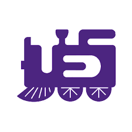

Work Experience

Generative AI NSERC USRA
In this role I worked with my professor to begin learning about what RAG is and
RAG's importance. After learning about RAG, I was directed to learn about a
specific type of RAG called CRAG (Corrective Retrieval Augmentive Generation) and implement
it in code.

First Year Representative
In this role I represented 900+ first year students in engineering. This helped
develop communication skills - I consistently had to relay messages from the
professors to the students and vice versa - alongside my leadership skills.
Data Entry Clerk
In this role I worked with a team of around 7 people and helped retrieve items,
identify the items, and record the items in the company database. This displayed
teamwork, consistency to enter data at a fast pace, and ability to work for long
periods of time.
 GitHub
GitHub
 LinkedIn
LinkedIn
 hyousse8@uwo.ca
hyousse8@uwo.ca